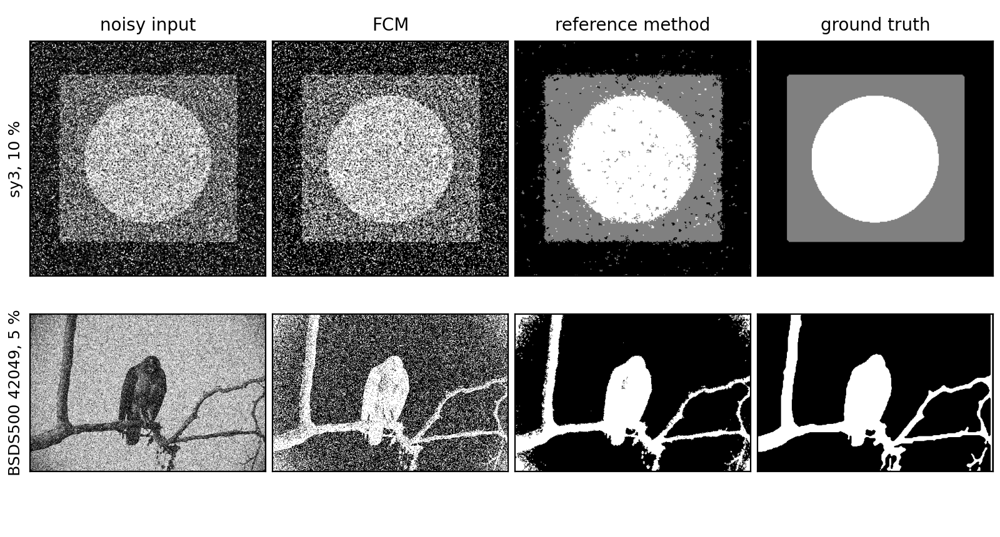

Segmentation divides an image into regions that belong together, such as tissue types in an MRI scan or land-cover classes in a satellite image. It is often the first step before anything is measured or recognised.
- Every pixel gets a class label → regions, boundaries and areas can be measured
- Uses: medical imaging, remote sensing, industrial inspection
- Real images are noisy: sensor noise, faulty pixels (salt-and-pepper), speckle in ultrasound and radar
- A good method keeps the regions intact even when many single pixels are wrong

Our runs, seed 0: the noisy image, plain FCM, the reference method and the correct segmentation